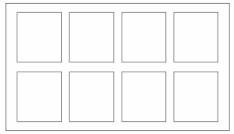

Welcome to Cycle School
I'm guessing you're here to learn about the water cycle.
If you, are feel free to read this website to get your brain learning all the facts about the water cycle.
In this piece you learn all about the 5 stages of the cycle!
Evaporation is the very first step in the water cycle.
Evaporation is when the sun heats the water in the sea and it rises in to the air.
When the water rises it turns into a gas called water vapour.
This step of the water cycle is invisible!!!!!
Condensation is the step that comes after evaporation.
Condensation is when the water vapour condenses and eventually forms a visible white gas which we know as clouds
On average a rain cloud can hold 17.4 millon gallons of water. That's enough to fill 185 millon coca cola cans!!!!
Once the cloud has formed it's unique shape the wind blows it somewhere different.
Cloud meauresuse this type of grid to see how much water has been evaporating and condensing.
Precipitation is the third step in the water cycle.
Precipitation is the the clouds have too much water vapor in them and they explode but some explode slowly.
When they eplode the produse rain water is tiny droplet form.
Rain can be made in different ways depending on the weather of the country. Such as:
Precipitation is also when the clouds get rid of all their water and let it pour over us.
These last 2 steps are are the last stages of the water cycle; Runoff and Ground Water.
Runoff is the fourth stage of this cycle.
And Ground Water is the fifth stage in the cycle
Runoff is when the water from the clouds runs down paths mountains and other places into the ground.
Runoff is also like papparatzi chasing a famous actor all around town
Ground water is when the water travels through the ground all the way back into sea
By Priyena